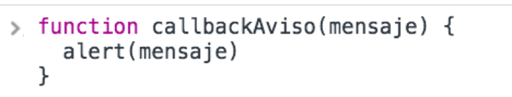
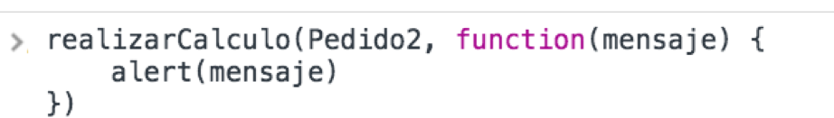

codificar

Entre las ventajas más fuertes que tiene el uso de la funciones está la reutilización de código y el nivel de modularidad que le das a tu aplicación, generalizando funciones que se repiten en muchas partes.
Para realizar este ejercicio, continuemos con el caso de la lección anterior: estás trabajando en el supermercado y, esta vez, tienes un reto más grande: dos compras se encuentran acumuladas y en el archivo javascript hay un nuevo arreglo con el pedido número 2 y toda su información.
Lo que debes hacer es crear una función con el nombre que tu quieras y recibir como parámetro el vector con los datos de un pedido. Debes mover el algoritmo que realiza el cálculo en la lección anterior hacia adentro y adecuarlo para que trabaje con el vector que llega como parámetro. Adicional a esto, debes recibir un callback como segundo parámetro y ejecutarlo al final de esta función, pasándole como parámetro el mensaje que se genera al final, es decir: “Señor(a) el valor total de su compra es:“
Contenido
Instrucciones
- Descarga el codBase.zip que contiene la página web.
- La interfaz ha cambiado. Ahora tiene el nuevo pedido y un nuevo botón para procesar el segundo pedido: en el archivo index.js está definido un nuevo objeto llamado Pedido2, además de un nuevo evento que atenderá el click sobre el nuevo botón.
- Debes crear una función con el nombre que tu quieras y mover el algoritmo que realiza el cálculo al interior de esta función para que pueda ser reutilizado en otros cálculos. Esta función debe recibir un vector llamado Pedido como parámetro y operar sobre este.
- La función debe recibir un callback como segundo parámetro y ejecutarlo al finalizar todos sus procesos.
- Dentro de la función debes declarar una nueva variable llamada mensaje y almacenar en ella el mensaje que se mostraba anteriormente en la alerta, el que contiene el nombre del cliente, el valor de compra con y sin IVA y la verificación del premio.
- Dentro de cada evento click de los botones, debes hacer el llamado a la función y si es el boton numero 1 pasar el pedido 1, si es el boton numero 2 pasar el pedido 2.
- En los llamados a la función que realiza el cálculo, el callback lo debes pasar de la siguiente manera:
- En el botón 1, el callback debe ser una función con nombre, previamente definida, por ejemplo:
 - En el botón 2, el callback debe ser una función anónima enviada directamente en la invocación, por ejemplo:

- En el botón 1, el callback debe ser una función con nombre, previamente definida, por ejemplo:
Buenas Prácticas
- Adecuar funciones para realizar un proceso que se realiza muchas veces, te ayuda a tener un proyecto altamente escalable y fácil de mantener. Además de facilitarte la vida a la hora de realizar grandes cambios en la aplicación, ya que tienes la posibilidad de modificar una sola función que trabaja para varias partes y no la misma función en muchas partes.
Intenta completar la actividad por tu cuenta pero ten presente que si se te dificulta, puedes contactar a un tutor a través del chat de ayuda.
Aprender estos conceptos y saber cómo llevarlos a la práctica, te permitirá tener éxito en tu carrera como desarrollador. Entonces, esfuérzate al máximo y descarga la solución sólo si necesitas verificar tu trabajo o asegurarte de que estás en el camino correcto.
Recuerda, esta actividad te debería tomar aproximadamente 25 minutos en completar.